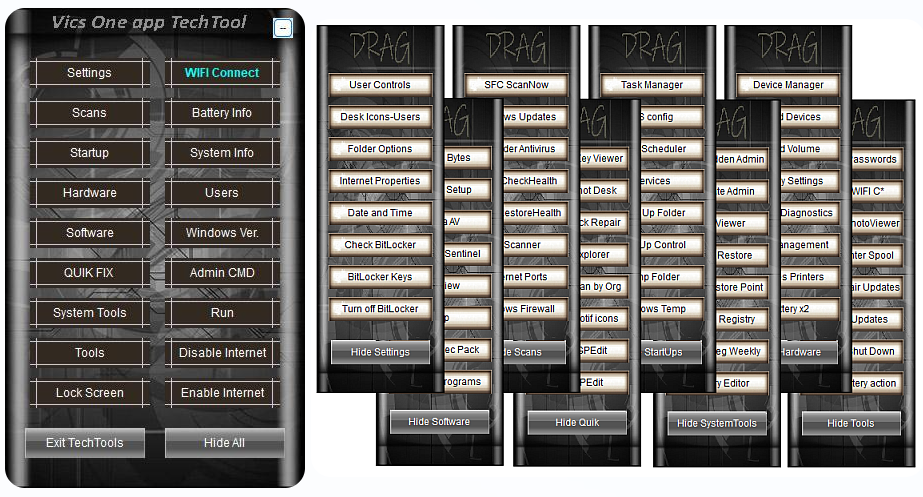

The interface directly mimics the exact step-by-step workflow of a high-volume repair day. No digging through nested menus.
sfc /scannow commands.DISM commands and push automated repairs.Stop waiting on scans. Start clearing your bench.
Test the core workflow on your bench completely free. The trial includes full, unrestricted access to the first 3 critical daughter windows.
Unlock all 8 daughter windows and the complete native scripting suite. No subscriptions. No hidden fees. Just a professional tool for professional techs.